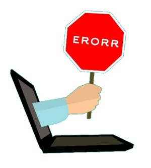

Error Handling

Taken from Boston Web Marketing
A function return value tells whether an error occurred during its execution.
- A function in C returns 0 if no errors happened (the execution was successful), and non-zero values in case of an error.
A special variable named errno, which is defined in the C library <errno.h> describes what kind of error happened.
extern int errno; // This is how errno is defined for us in <errno.h>.After calling a function that changes errno, we can check the content of errno to find if anything abnormal happened during the function's execution. The check must be done right after the function call in our code (since, otherwise, we may instead see error codes that other functions after our function call have set.) Each errno value corresponds to a different type of error. Example: When errno = 1, this stands for the EACCESS = "Permission denied" error.
The C library provides functions translating errno to its description: perror(), strerror(), and strerror_r().
 These notes by Miriam Briskman are licensed under CC BY-NC 4.0 and based on sources.
These notes by Miriam Briskman are licensed under CC BY-NC 4.0 and based on sources.